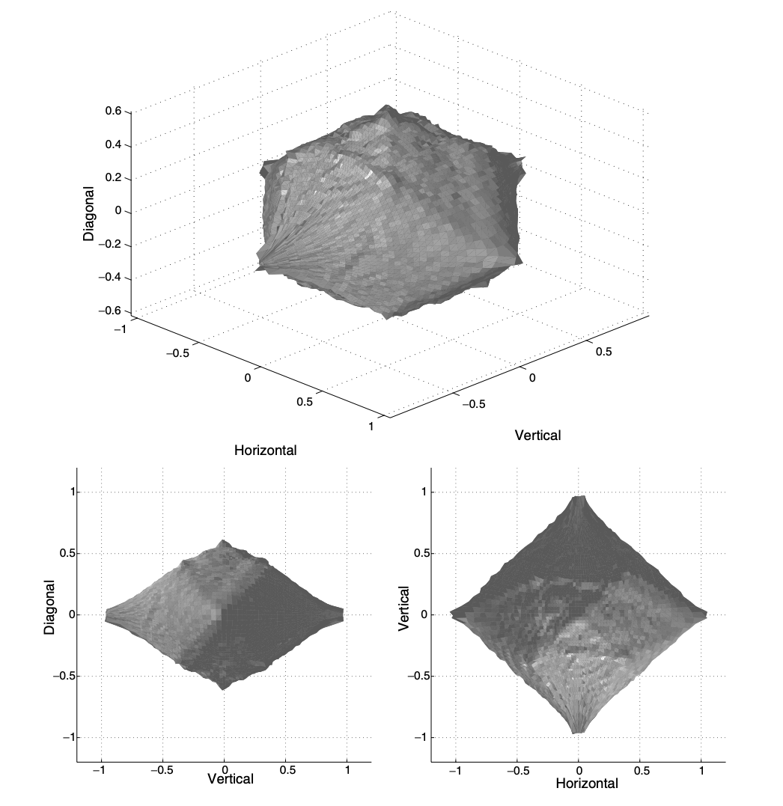

<!DOCTYPE html>
<html lang="" xml:lang="">
<head>

  <meta charset="utf-8" />
  <meta http-equiv="X-UA-Compatible" content="IE=edge" />
  <title>Chapter 4 Non-parametric Density Estimation | Statistical methods on Riemannian manifold with applications.</title>
  <meta name="description" content="Capstone Project." />
  <meta name="generator" content="bookdown 0.21 and GitBook 2.6.7" />

  <meta property="og:title" content="Chapter 4 Non-parametric Density Estimation | Statistical methods on Riemannian manifold with applications." />
  <meta property="og:type" content="book" />
  
  
  <meta property="og:description" content="Capstone Project." />
  <meta name="github-repo" content="rstudio/bookdown-demo" />

  <meta name="twitter:card" content="summary" />
  <meta name="twitter:title" content="Chapter 4 Non-parametric Density Estimation | Statistical methods on Riemannian manifold with applications." />
  
  <meta name="twitter:description" content="Capstone Project." />
  

<meta name="author" content="Emil Le" />


<meta name="date" content="2021-03-14" />

  <meta name="viewport" content="width=device-width, initial-scale=1" />
  <meta name="apple-mobile-web-app-capable" content="yes" />
  <meta name="apple-mobile-web-app-status-bar-style" content="black" />
  
  
<link rel="prev" href="geodesics-regression.html"/>
<link rel="next" href="conclusion.html"/>
<script src="libs/header-attrs-2.6/header-attrs.js"></script>
<script src="libs/jquery-3.5.1/jquery.min.js"></script>
<link href="libs/gitbook-2.6.7/css/style.css" rel="stylesheet" />
<link href="libs/gitbook-2.6.7/css/plugin-table.css" rel="stylesheet" />
<link href="libs/gitbook-2.6.7/css/plugin-bookdown.css" rel="stylesheet" />
<link href="libs/gitbook-2.6.7/css/plugin-highlight.css" rel="stylesheet" />
<link href="libs/gitbook-2.6.7/css/plugin-search.css" rel="stylesheet" />
<link href="libs/gitbook-2.6.7/css/plugin-fontsettings.css" rel="stylesheet" />
<link href="libs/gitbook-2.6.7/css/plugin-clipboard.css" rel="stylesheet" />


<script src="libs/htmlwidgets-1.5.3/htmlwidgets.js"></script>
<script src="libs/rglWebGL-binding-0.104.16/rglWebGL.js"></script>
<link href="libs/rglwidgetClass-0.104.16/rgl.css" rel="stylesheet" />
<script src="libs/rglwidgetClass-0.104.16/rglClass.min.js"></script>
<script src="libs/CanvasMatrix4-0.104.16/CanvasMatrix.min.js"></script>
<link href="libs/crosstalk-1.1.1/css/crosstalk.css" rel="stylesheet" />
<script src="libs/crosstalk-1.1.1/js/crosstalk.min.js"></script>


<style type="text/css">
pre > code.sourceCode { white-space: pre; position: relative; }
pre > code.sourceCode > span { display: inline-block; line-height: 1.25; }
pre > code.sourceCode > span:empty { height: 1.2em; }
code.sourceCode > span { color: inherit; text-decoration: inherit; }
pre.sourceCode { margin: 0; }
@media screen {
div.sourceCode { overflow: auto; }
}
@media print {
pre > code.sourceCode { white-space: pre-wrap; }
pre > code.sourceCode > span { text-indent: -5em; padding-left: 5em; }
}
pre.numberSource code
  { counter-reset: source-line 0; }
pre.numberSource code > span
  { position: relative; left: -4em; counter-increment: source-line; }
pre.numberSource code > span > a:first-child::before
  { content: counter(source-line);
    position: relative; left: -1em; text-align: right; vertical-align: baseline;
    border: none; display: inline-block;
    -webkit-touch-callout: none; -webkit-user-select: none;
    -khtml-user-select: none; -moz-user-select: none;
    -ms-user-select: none; user-select: none;
    padding: 0 4px; width: 4em;
    color: #aaaaaa;
  }
pre.numberSource { margin-left: 3em; border-left: 1px solid #aaaaaa;  padding-left: 4px; }
div.sourceCode
  {   }
@media screen {
pre > code.sourceCode > span > a:first-child::before { text-decoration: underline; }
}
code span.al { color: #ff0000; font-weight: bold; } /* Alert */
code span.an { color: #60a0b0; font-weight: bold; font-style: italic; } /* Annotation */
code span.at { color: #7d9029; } /* Attribute */
code span.bn { color: #40a070; } /* BaseN */
code span.bu { } /* BuiltIn */
code span.cf { color: #007020; font-weight: bold; } /* ControlFlow */
code span.ch { color: #4070a0; } /* Char */
code span.cn { color: #880000; } /* Constant */
code span.co { color: #60a0b0; font-style: italic; } /* Comment */
code span.cv { color: #60a0b0; font-weight: bold; font-style: italic; } /* CommentVar */
code span.do { color: #ba2121; font-style: italic; } /* Documentation */
code span.dt { color: #902000; } /* DataType */
code span.dv { color: #40a070; } /* DecVal */
code span.er { color: #ff0000; font-weight: bold; } /* Error */
code span.ex { } /* Extension */
code span.fl { color: #40a070; } /* Float */
code span.fu { color: #06287e; } /* Function */
code span.im { } /* Import */
code span.in { color: #60a0b0; font-weight: bold; font-style: italic; } /* Information */
code span.kw { color: #007020; font-weight: bold; } /* Keyword */
code span.op { color: #666666; } /* Operator */
code span.ot { color: #007020; } /* Other */
code span.pp { color: #bc7a00; } /* Preprocessor */
code span.sc { color: #4070a0; } /* SpecialChar */
code span.ss { color: #bb6688; } /* SpecialString */
code span.st { color: #4070a0; } /* String */
code span.va { color: #19177c; } /* Variable */
code span.vs { color: #4070a0; } /* VerbatimString */
code span.wa { color: #60a0b0; font-weight: bold; font-style: italic; } /* Warning */
</style>

<link rel="stylesheet" href="style.css" type="text/css" />
</head>

<body>


  <div class="book without-animation with-summary font-size-2 font-family-1" data-basepath=".">

    <div class="book-summary">
      <nav role="navigation">

<ul class="summary">
<li><a href="./">A Minimal Book Example</a></li>

<li class="divider"></li>
<li class="chapter" data-level="" data-path="preface.html"><a href="preface.html"><i class="fa fa-check"></i>Preface</a></li>
<li class="chapter" data-level="1" data-path="intro.html"><a href="intro.html"><i class="fa fa-check"></i><b>1</b> Introduction</a>
<ul>
<li class="chapter" data-level="1.1" data-path="intro.html"><a href="intro.html#motivation"><i class="fa fa-check"></i><b>1.1</b> Motivation</a></li>
<li class="chapter" data-level="1.2" data-path="intro.html"><a href="intro.html#project-outline"><i class="fa fa-check"></i><b>1.2</b> Project outline</a></li>
<li class="chapter" data-level="1.3" data-path="intro.html"><a href="intro.html#what-is-a-manifold"><i class="fa fa-check"></i><b>1.3</b> What is a Manifold?</a></li>
</ul></li>
<li class="chapter" data-level="2" data-path="statistics-on-riemannian-manifold.html"><a href="statistics-on-riemannian-manifold.html"><i class="fa fa-check"></i><b>2</b> Statistics on Riemannian Manifold</a>
<ul>
<li class="chapter" data-level="2.1" data-path="statistics-on-riemannian-manifold.html"><a href="statistics-on-riemannian-manifold.html#riemannian-manifold"><i class="fa fa-check"></i><b>2.1</b> Riemannian Manifold</a></li>
<li class="chapter" data-level="2.2" data-path="statistics-on-riemannian-manifold.html"><a href="statistics-on-riemannian-manifold.html#instrinsic-moments"><i class="fa fa-check"></i><b>2.2</b> Instrinsic moments</a></li>
<li class="chapter" data-level="2.3" data-path="statistics-on-riemannian-manifold.html"><a href="statistics-on-riemannian-manifold.html#asymtomtic-behavior"><i class="fa fa-check"></i><b>2.3</b> Asymtomtic behavior</a></li>
<li class="chapter" data-level="2.4" data-path="statistics-on-riemannian-manifold.html"><a href="statistics-on-riemannian-manifold.html#normal-distribution"><i class="fa fa-check"></i><b>2.4</b> Normal distribution</a></li>
</ul></li>
<li class="chapter" data-level="3" data-path="geodesics-regression.html"><a href="geodesics-regression.html"><i class="fa fa-check"></i><b>3</b> Geodesics Regression</a>
<ul>
<li class="chapter" data-level="3.1" data-path="geodesics-regression.html"><a href="geodesics-regression.html#motivation-1"><i class="fa fa-check"></i><b>3.1</b> Motivation</a></li>
<li class="chapter" data-level="3.2" data-path="geodesics-regression.html"><a href="geodesics-regression.html#geodesics-regression-1"><i class="fa fa-check"></i><b>3.2</b> Geodesics Regression</a></li>
<li class="chapter" data-level="3.3" data-path="geodesics-regression.html"><a href="geodesics-regression.html#least-square-estimate"><i class="fa fa-check"></i><b>3.3</b> Least Square Estimate</a></li>
<li class="chapter" data-level="3.4" data-path="geodesics-regression.html"><a href="geodesics-regression.html#application"><i class="fa fa-check"></i><b>3.4</b> Application</a></li>
</ul></li>
<li class="chapter" data-level="4" data-path="non-parametric-density-estimation.html"><a href="non-parametric-density-estimation.html"><i class="fa fa-check"></i><b>4</b> Non-parametric Density Estimation</a>
<ul>
<li class="chapter" data-level="4.1" data-path="non-parametric-density-estimation.html"><a href="non-parametric-density-estimation.html#motivation-2"><i class="fa fa-check"></i><b>4.1</b> Motivation</a></li>
<li class="chapter" data-level="4.2" data-path="non-parametric-density-estimation.html"><a href="non-parametric-density-estimation.html#k-nearest-neighbor"><i class="fa fa-check"></i><b>4.2</b> k-nearest neighbor</a></li>
<li class="chapter" data-level="4.3" data-path="non-parametric-density-estimation.html"><a href="non-parametric-density-estimation.html#asymptotic-behavior"><i class="fa fa-check"></i><b>4.3</b> Asymptotic Behavior</a></li>
<li class="chapter" data-level="4.4" data-path="non-parametric-density-estimation.html"><a href="non-parametric-density-estimation.html#application-1"><i class="fa fa-check"></i><b>4.4</b> Application</a></li>
</ul></li>
<li class="chapter" data-level="5" data-path="conclusion.html"><a href="conclusion.html"><i class="fa fa-check"></i><b>5</b> Conclusion</a></li>
<li class="chapter" data-level="" data-path="references.html"><a href="references.html"><i class="fa fa-check"></i>References</a></li>
<li class="divider"></li>
<li><a href="https://github.com/rstudio/bookdown" target="blank">Published with bookdown</a></li>

</ul>

      </nav>
    </div>

    <div class="book-body">
      <div class="body-inner">
        <div class="book-header" role="navigation">
          <h1>
            <i class="fa fa-circle-o-notch fa-spin"></i><a href="./">Statistical methods on Riemannian manifold with applications.</a>
          </h1>
        </div>

        <div class="page-wrapper" tabindex="-1" role="main">
          <div class="page-inner">

            <section class="normal" id="section-">
<div id="non-parametric-density-estimation" class="section level1" number="4">
<h1><span class="header-section-number">Chapter 4</span> Non-parametric Density Estimation</h1>
<div id="motivation-2" class="section level2" number="4.1">
<h2><span class="header-section-number">4.1</span> Motivation</h2>
<p>In neuroscience, Reinagel (1999) points out that human’s eyes moves more rapidly around high-contrast regions when looking at an image. Thus, a rational assumption about the natural images is that the high-contrast region areas encode the most significant relevant information about an image. Denoising an image is an important challenge in the field of computer science. As researchers tend to believe that low-contrast regions (noise) of an image follows a non-Gaussian distribution. Often time, image analysis problem takes spherical projection of visual data as it encapsules the complicated geometric structure of images (for example, luminosity, folow, <span class="math inline">\(\dots\)</span>). This motivates finding statistical methods to estimate the noise non-Gaussian distribution of natural images on a Riemannian domain.</p>
<center>
<p></p>
Figure 5.1: Are high-contrast regions more significant to you? (Gampat 2016)
</center>
</div>
<div id="k-nearest-neighbor" class="section level2" number="4.2">
<h2><span class="header-section-number">4.2</span> k-nearest neighbor</h2>
<p>The k-nearest neighbor (k-NN) is one of fundamental method for non-parametric estimation, which intuitively makes a lot of sense to think about it. Assume that our data follows has a non-Gaussian distribution <span class="math inline">\(f\)</span>, then the distribution of the <span class="math inline">\(k-\)</span>NN of our data (for some <span class="math inline">\(k\)</span>) is inversely proportional to <span class="math inline">\(f\)</span>. Why? It’s because a value on the distribution of <span class="math inline">\(k-\)</span>NN represents there are at least <span class="math inline">\(k\)</span> points lies near a point in our data set, so the inverse would represents the density around that point. The problem here translates to, what is the best choice for <span class="math inline">\(k\)</span>?</p>
<p><strong>Defintion</strong> Let <span class="math inline">\(\mathcal{X_1},\mathcal{X_2},\dots\mathcal{X}_n\)</span> be <span class="math inline">\(n\)</span> i.i.d. r.v. on Riemannian manifold space <span class="math inline">\((\mathcal{M},\rho)\)</span> (<span class="math inline">\(\mathcal{M}\subset\mathbb{R}^{n}\)</span>) with an assumed distribution <span class="math inline">\(f\)</span>. An estimator for <span class="math inline">\(f\)</span> using k-nearest neighbor methods proposed by Wagner (1975) is given by:
<span class="math display">\[\hat f_n(p)= \frac{1}{nH_\rho(p)}\sum_{i=1}^n\frac{1}{V_{\mathcal{X}_i}(p)}K(\frac{\rho(p,\mathcal{X}_i)}{H_\rho(p)}), \text{ where}:\]</span>
<span class="math display">\[
\begin{cases}
K:\mathbb{R}\to\mathbb{R} \text{ is a non-negative function with compact support}\\
V_{q}(p) \text{ is a volumn density function on } (\mathcal{M},\rho) \\ 
H_\rho(p) \text{ is the distance induced by }\rho \text{ representing the nearest k-neighbors of } p\\
\end{cases}
\]</span>
In general, we can think of <span class="math inline">\(\hat f_n(p)\propto\frac{1}{\text{Volumn of }S^{n-1}\text{ of radius }H_\rho(p)}\)</span></p>
</div>
<div id="asymptotic-behavior" class="section level2" number="4.3">
<h2><span class="header-section-number">4.3</span> Asymptotic Behavior</h2>
</div>
<div id="application-1" class="section level2" number="4.4">
<h2><span class="header-section-number">4.4</span> Application</h2>
<p>The observation in image processing being made is that natural images typically
are dicult for denoising processes, and the distribution of the noise are non-gaussians, and
we assume that the important features lies in the high contrasting areas. Thus, we took 20%
of total 3x3 patches to extract most prominent geometric structure of the data. The preprocessing
takes a vector x 2 R9 from the dataset and normalize. The normalizing process
subtracting the mean, and devided with D-norm of x, which is a 9x9 matrices that takes the
square root of the summing of the dierences between 4-connected neighbors in x. Firstly, we
dene a subset consist of x after normalizing lies within parameter with metric norm D, and
the result is a 7-dimensional ellipsoid lies in R9. For convenience of using agular distance and
to whitening the data, we want to project it into a 7􀀀sphere using 2-dimensional Discrete
Cosine Transform (DCT). There are 8 non-constant DCT basis lies in R9, so the basis matrix
A is given by a 9x8 matrix, with  is a 8x8 basis eculedian-normalizing constant matrix.
The projection is given by v = AT y, where y is in the 7􀀀sphere lies in R9. This essential
transform our data to a 7-sphere S7  R8.</p>
<center>
<p></p>
Figure 5.2: The joint distribution of horizontal, vertical, and diagonal wavelet coefficients in optical images, viewed from three different angles. (Lee 2001)
</center>

</div>
</div>
            </section>

          </div>
        </div>
      </div>
<a href="geodesics-regression.html" class="navigation navigation-prev " aria-label="Previous page"><i class="fa fa-angle-left"></i></a>
<a href="conclusion.html" class="navigation navigation-next " aria-label="Next page"><i class="fa fa-angle-right"></i></a>
    </div>
  </div>
<script src="libs/gitbook-2.6.7/js/app.min.js"></script>
<script src="libs/gitbook-2.6.7/js/lunr.js"></script>
<script src="libs/gitbook-2.6.7/js/clipboard.min.js"></script>
<script src="libs/gitbook-2.6.7/js/plugin-search.js"></script>
<script src="libs/gitbook-2.6.7/js/plugin-sharing.js"></script>
<script src="libs/gitbook-2.6.7/js/plugin-fontsettings.js"></script>
<script src="libs/gitbook-2.6.7/js/plugin-bookdown.js"></script>
<script src="libs/gitbook-2.6.7/js/jquery.highlight.js"></script>
<script src="libs/gitbook-2.6.7/js/plugin-clipboard.js"></script>
<script>
gitbook.require(["gitbook"], function(gitbook) {
gitbook.start({
"sharing": {
"github": false,
"facebook": true,
"twitter": true,
"linkedin": false,
"weibo": false,
"instapaper": false,
"vk": false,
"all": ["facebook", "twitter", "linkedin", "weibo", "instapaper"]
},
"fontsettings": {
"theme": "white",
"family": "sans",
"size": 2
},
"edit": {
"link": "https://github.com/rstudio/bookdown-demo/edit/master/04-knn.Rmd",
"text": "Edit"
},
"history": {
"link": null,
"text": null
},
"view": {
"link": null,
"text": null
},
"download": ["bookdown-demo.pdf", "bookdown-demo.epub"],
"toc": {
"collapse": "subsection"
}
});
});
</script>

<!-- dynamically load mathjax for compatibility with self-contained -->
<script>
  (function () {
    var script = document.createElement("script");
    script.type = "text/javascript";
    var src = "true";
    if (src === "" || src === "true") src = "https://mathjax.rstudio.com/latest/MathJax.js?config=TeX-MML-AM_CHTML";
    if (location.protocol !== "file:")
      if (/^https?:/.test(src))
        src = src.replace(/^https?:/, '');
    script.src = src;
    document.getElementsByTagName("head")[0].appendChild(script);
  })();
</script>
</body>

</html>
